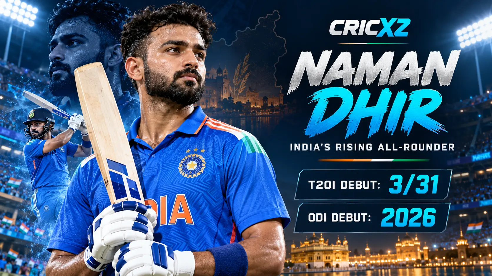
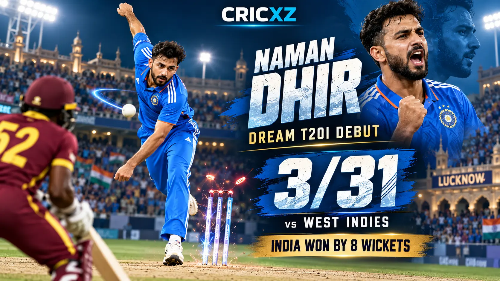

ODI Career
- Matches
- 3
- Runs
- 30
- Highest score
- 30
- Wickets
- 1
- Best bowling
- 1/33

Naman Dhir rose through Punjab's domestic system and the IPL before making his ODI and T20I debuts for India in 2026. He made an immediate impact in the shortest format by taking 3/31 against West Indies in Lucknow.
Career statistics are current through 6 October 2026.
Dhir remains an active player, so these figures may change after his next appearance. The international snapshot includes his first ODI series and T20I debut against West Indies.
Dhir's rise has been built on aggressive middle-order batting and useful off-spin. He helped Punjab win the 2023 Syed Mushtaq Ali Trophy, established himself with Mumbai Indians and earned India selection after another prolific domestic T20 campaign.

Dhir made his T20I debut in Lucknow on 6 October 2026 and returned 3/31 from four overs. He dismissed West Indies captain Shai Hope for 52 before removing Romario Shepherd and Shamar Springer.
He became only the third Indian spinner, after Pragyan Ojha and Axar Patel, to take at least three wickets on T20I debut. India dismissed West Indies for 171 and completed an eight-wicket victory. Read the full India vs West Indies first T20I match report.
27 September 2026
Made his international debut against West Indies during India's home ODI series.
6 October 2026
Took 3/31 against West Indies at Lucknow and finished as India's leading wicket-taker.
Debut: 2024
Developed into a high-impact Mumbai Indians batter, scoring at a strike rate above 163 through IPL 2026.
Claimed three important wickets against West Indies in Lucknow.
Became the third Indian spinner to take three or more wickets on T20I debut.
Produced a record-breaking innings during the 2026 Sher-e-Punjab T20 tournament.
Scored 710 IPL runs at an elite strike rate through the 2026 season.
Played an important role in Punjab's title-winning campaign.
Made both his ODI and T20I debuts against West Indies.
Read the match report from his three-wicket debut, explore captain Shreyas Iyer's career profile, or browse all CricXZ player profiles.